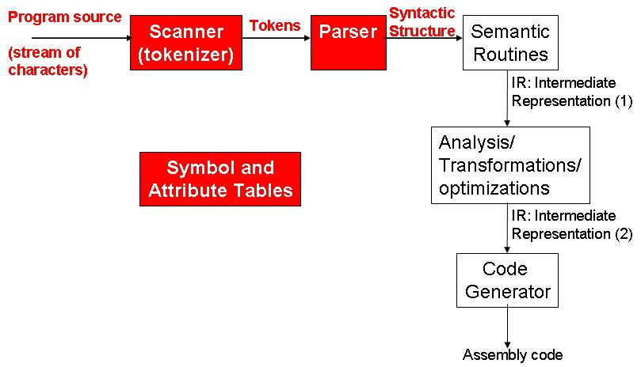

Your goal in this step is to process variable declarations and create Symbol Tables. A symbol table is a data structure that keeps information about non-keyword symbols that appear in source programs. Variables and String Variables are examples of such symbols. Other example of symbols kept by the symbol table are the names of functions or procedures. The symbols added to the symbol table will be used in many of the further phases of the compilation. The diagram below shows the progress in our compiler construction at the end of this step:

In Step 2 you didn't need token values since only token types are used by parser generator tools to guide parsing. But in this step your parser needs to get token values such as identifier names and string literals from your scanner. You also need to add semantic actions to create symbol table entries and add those to the symbol table.
In this year's variant of Micro, there are multiple scopes where variables can be declared:
Your task in this step of the project is to construct symbol tables for each scope in your program. For each scope, construct a symbol table, then add entries to that symbol table as you see declarations. The declarations you have to handle are integer/float declarations, which should record the name and type of the variable, and string declarations, which should additionally record the value of the string. Note that typically function declarations/definitions would result in entries in the symbol table, too, but you do not have to record them for this step.
Note that the scopes in the program are nested (function scopes are inside global scopes, and block scopes are nested inside function scopes, or each other). You will have to keep track of this nesting so that when a piece of code uses a variable named "x" you know which scope that variable is from.
Your compiler should output the string "DECLARATION ERROR <var_name>" if there are two declarations with the same name in the same scope. ECE 573 students: you should output the string "SHADOW WARNING <var_name>" if there is a declaration with the same name in two different scopes, and one is nested inside the other (in other words, when looking for name conflicts, you have to look at all enclosing scopes).
For each symbol table in your program, use the following format:
Symbol table <scope_name> name <var_name> type <type_name> name <var_name> type <type_name> value <string_value> ...The global scope should be named "GLOBAL", function scopes should be given the same name as the function name, and block scopes should be called "BLOCK X" where X is a counter that increments every time you see a new block scope. Function parameters should be included as part of the function scope.
The order of declarations matters! We expect the entries in your symbol table to appear in the same order that they appear in the original program. Keep this in mind as you design the data structures to store your symbol tables.
Test cases are available here, and outputs are available here. You are only responsible for the testcases for your class.
To help you better test your compiler, you can try running inputs through our sample solution. The command line to run the sample solution (assuming the .jar file is in your main project directory) is:
java -cp lib/antlr.jar:step3.jar Micro <input>
The same requirements (behavior of Makefile and compiler) as in step2 apply. See this page for clarifications on your directory structure.